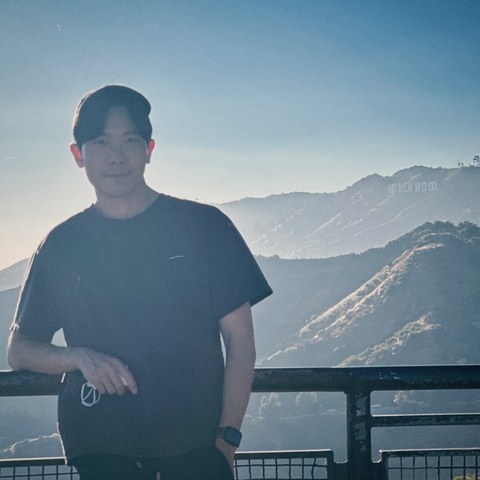

Description.
Hi, thanks for visiting my website! I’m a 3D artist and college lecturer who loves blending technical workflows with a dash of creative storytelling. This is a collection of my past, recent, and ongoing projects, ranging from single assets to full environments. Whether I’m sculpting in ZBrush or modeling in Maya, I focus on crafting diverse subjects—from peaceful gardens to space colonies—with an eye for realistic and grounded design. I’m always looking for ways to make digital worlds feel inviting, so I hope you enjoy seeing how it all comes together!
Open to freelance projects, studio roles, and collaborations. Feel free to reach out via email or LinkedIn.